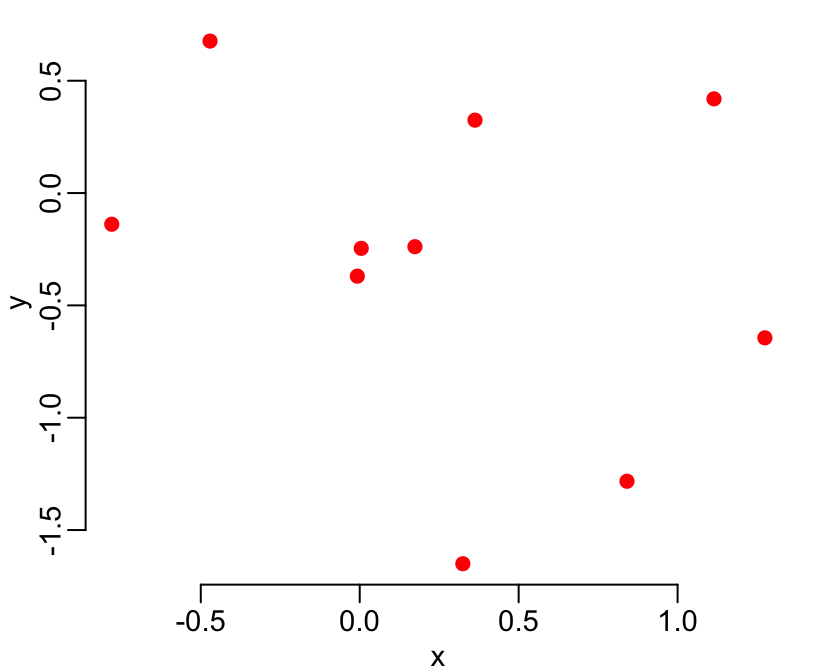
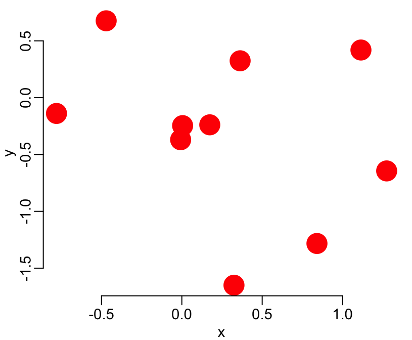
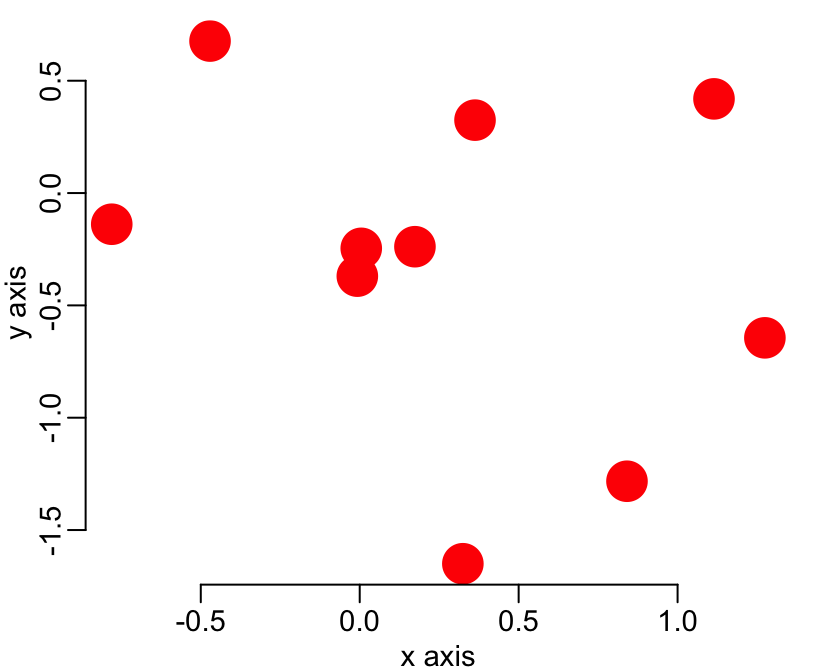
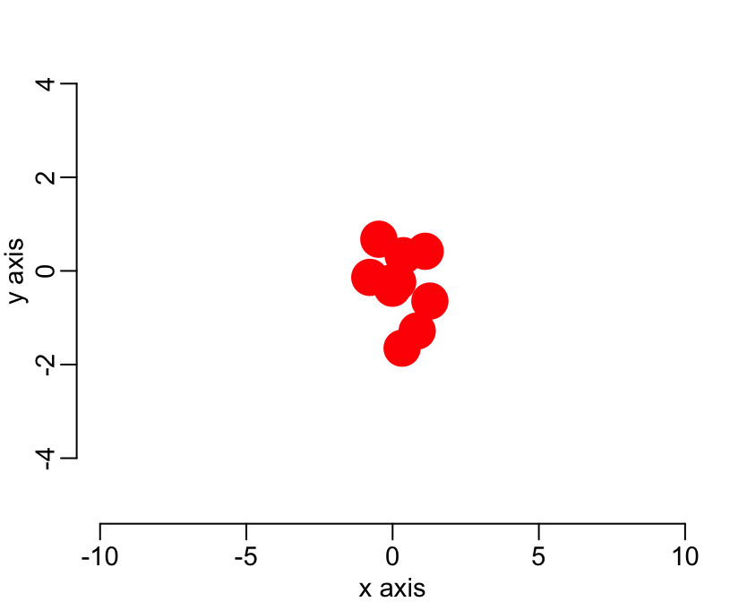
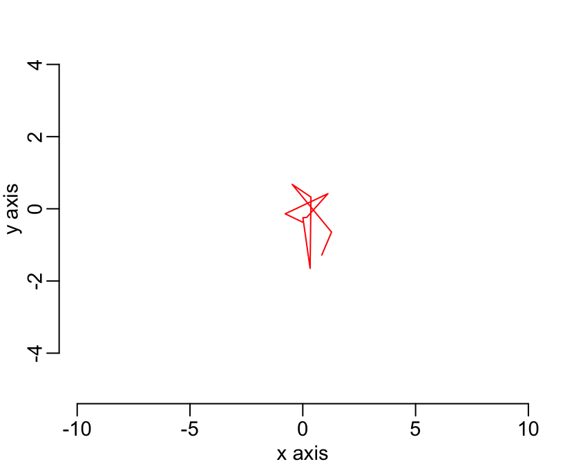
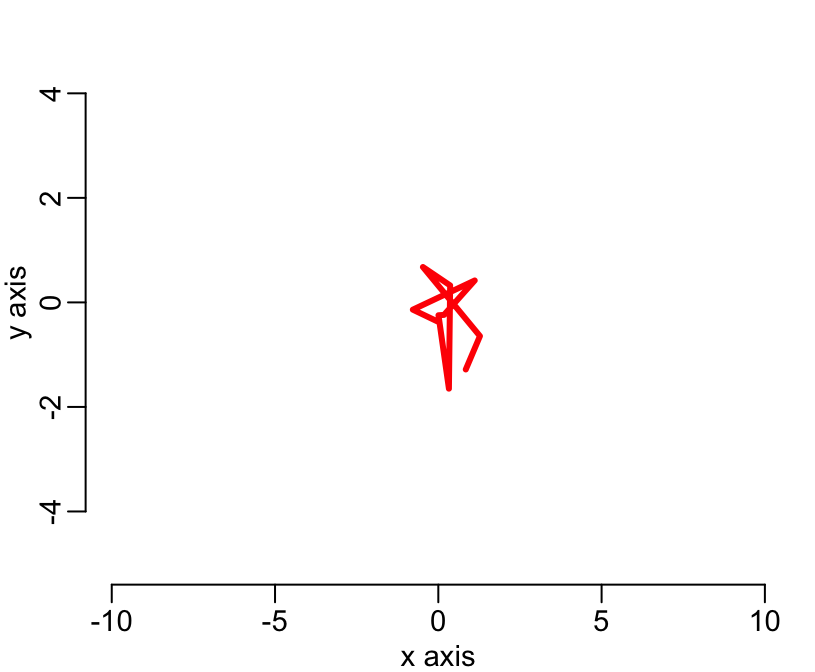
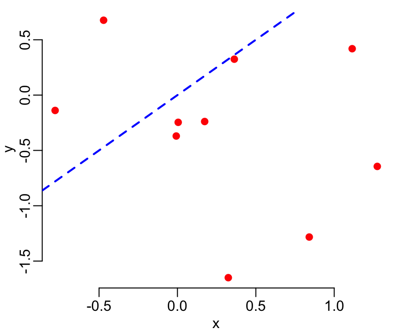

Before we start
Memory / disk
Use the R help with the ?
Use Google! or StackOverflow with the [r] keyword
Command history (use arrows!)
Use RStudio
Organize you work in projects in RStudio
Use keyboard shortcuts in RStudio, in particular for the assingment operator
Refer to the CRAN website
Make sure that your system (R, RStudio and packages) is up to date. There is a new R release every 6 months, even more often than that for RStudio. Type update.packages() at the command line to update the packages
R as a calculator
1 + 2
## [1] 3
3 * 4
## [1] 12
5 / 6
## [1] 0.8333333
7 - 8
## [1] -1
Variables
Creating variables:
a <- 1
b <- 2
c <- 3
Listing the variables in the environment:
ls()
## [1] "a" "b" "c"
Seeing the content of a variable:
a
## [1] 1
Removing a variable:
rm(a)
Checking that variable a has been removed:
ls()
## [1] "b" "c"
Removing several variables at once:
rm(b, c)
Checking:
ls()
## character(0)
Vectors
Basic data structure in R is vector with is and ordered collection of elements, all the same nature:
a <- c(1, 2, 3)
b <- c("a", "b", "c")
Selecting elements:
a[1]
## [1] 1
b[2]
## [1] "b"
Negative selection:
a[-2]
## [1] 1 3
# is the same as
a[c(1, 3)]
## [1] 1 3
# and
b[-3]
## [1] "a" "b"
# is the same as
b[c(1:2)]
## [1] "a" "b"
Additional function to use on vectors:
length()
head()
tail()
seq()
Data frames
Whereas vectors are 1-dimension structure, data frames are 2-dimension structures (they have rows and columns). A data frame is basically a collection of vectors (organized in columns), all of the same length (the number of rows). To create a data frame:
mydf <- data.frame(name = c("george", "bob" , "edwin", "richard", "lisa"),
gender = c("male" , "male", "male" , "male" , "female"),
age = c(23 , 18 , 43 , 21 , 50),
stringsAsFactors = FALSE)
It looks like this:
mydf
## name gender age
## 1 george male 23
## 2 bob male 18
## 3 edwin male 43
## 4 richard male 21
## 5 lisa female 50
To positively and negatively select values from a data frame, it’s the same as for vector (i.e. square brackets), except that here we have to provide indexes for rows and columns separated by a common. Rows are always first. Examples:
mydf[, 2]
## [1] "male" "male" "male" "male" "female"
mydf[3, ]
## name gender age
## 3 edwin male 43
mydf[-3, ]
## name gender age
## 1 george male 23
## 2 bob male 18
## 4 richard male 21
## 5 lisa female 50
mydf[2, 3]
## [1] 18
mydf[2:4, c(1, 3)]
## name age
## 2 bob 18
## 3 edwin 43
## 4 richard 21
mydf[2:4, -1]
## gender age
## 2 male 18
## 3 male 43
## 4 male 21
Reading an excel file:
readxl::dengue2010 <- read_excel("name_of_the_excel_file.xls")
Lists
Lists are a collection of elements which, unlike vectors, do not need to be all of the same nature. Furthermore elements of a list can themselves be lists, which give lists the property to be structured objects.
my_list <- list(1, 2, 3)
my_list
## [[1]]
## [1] 1
##
## [[2]]
## [1] 2
##
## [[3]]
## [1] 3
Same as for vector, if you want to select elements of a list, use the single square brackets []:
my_list[2:3]
## [[1]]
## [1] 2
##
## [[2]]
## [1] 3
my_list[-1]
## [[1]]
## [1] 2
##
## [[2]]
## [1] 3
my_list[1]
## [[1]]
## [1] 1
In case you select only one element of the list, you may want to drop the list structure that you may not need any more. For that, use the double square brackets [[]] instead of single square brackets []:
my_list[2]
## [[1]]
## [1] 2
my_list[[2]]
## [1] 2
Same as for vectors, you can name the elements of a list:
my_list <- list(first = 1, second = 2, third = 3)
my_list
## $first
## [1] 1
##
## $second
## [1] 2
##
## $third
## [1] 3
And you can use these names instead of indexes to select the elements of a list:
my_list[1]
## $first
## [1] 1
my_list["first"]
## $first
## [1] 1
my_list[c(1, 3)]
## $first
## [1] 1
##
## $third
## [1] 3
my_list[c("first", "third")]
## $first
## [1] 1
##
## $third
## [1] 3
Finally, a very useful function to use on list is the with() function: it tells, in what list R should be looking for the elements you are talking about. Exammple:
first + 1
returns an error because by default R look for objects in the global environment, and there is no such object named first in the global environment:
ls()
## [1] "a" "b" "my_list" "mydf"
If you meant the element of the list my_list named first, then, you can specify it this way:
my_list[["first"]] + 1
## [1] 2
Note here that we dropped the list structure by the use of the double square brackets [[]]. An alternative to the above command is to use the with() function:
with(my_list, first + 1)
## [1] 2
Here, with() tells R to look for an element named first in the list named my_list.
Advanced
Two advanced points:
If you are selecting only one element of a list, then, the tree commands below are equivalent:
my_list[[2]]
## [1] 2
my_list[["second"]]
## [1] 2
my_list$second
## [1] 2
- Data frame are lists where all the elements (columns) are all vectors of the same length. In consequence, you can also make use of
[[]] and $ to select elements of a data frame as you would do for any regular list:
mydf[[2]]
## [1] "male" "male" "male" "male" "female"
mydf[["gender"]]
## [1] "male" "male" "male" "male" "female"
mydf$gender
## [1] "male" "male" "male" "male" "female"
Functions
In R there are 2 categories of objects: the variables that we just saw and which contains data and the functions that contains code (i.e. instruction). Think of functions as a machine that takes inputs (potentially many) and returns an output (sometimes nothing, but never more than one single output). To define a function, we still make use of the assignment operator <- but here the key word is funtion(){}
my_fct <- function(a, b, c) {a + b +c}
To see the content of a function, as for any object in R, just type the name of the function:
my_fct
## function(a, b, c) {a + b +c}
If, on the other hand, you want to excecute (or run) the function, you will have to add the round brackets to the name, possibly with some values for the arguments, if needed:
my_fct(1, 2, 3)
## [1] 6
Note also that you can specify the values of these arguemnts, either by position, as done above, or by name:
my_fct(b = 2, a = 1, c = 3)
## [1] 6
In which case, you can put the argument in any order, not necessarily the order of the function’s definition.
Note that the key word function has 2 parts: * the round brackets () that contains the names of the arguments (i.e. input). This is call the user-interface of the function since it is what the user has to defined in order to use the function. * the curly brackets {} that contains the instructions to perform (using the arguments). This is call the body of the function.
Note that the output of the function is always the last line (instruction) of what is in between the curly brackets. Indeed, remember that in R there is always one instruction per line. The body of the function can contain many lines:
my_fct <- function(a, b, c) {
numerator <- a + b
denominator <- b * c
numerator / denominator
}
Graphs
x <- rnorm(10)
y <- rnorm(10)
To do a scatterplot of the x-y coordinate, two options:
plot(x, y)

or
plot(y ~ x)
You can add many arguments to tune your graphs:
plot(x, y, col = "red")
plot(x, y, col = "red", pch = 19)

plot(x, y, col = "red", pch = 19, cex = 3)

plot(x, y, col = "red", pch = 19, cex = 3, xlab = "x axis", ylab = "y axis")

plot(x, y, col = "red", pch = 19, cex = 3, xlab = "x axis", ylab = "y axis",
main = "title")

plot(x, y, col = "red", pch = 19, cex = 3, xlab = "x axis", ylab = "y axis",
main = "title", xlim = c(-10, 10), ylim = c(-5, 5))

plot(x, y, col = "red", pch = 19, xlab = "x axis", ylab = "y axis",
main = "title", xlim = c(-10, 10), ylim = c(-5, 5), type = "l")

plot(x, y, col = "red", pch = 19, xlab = "x axis", ylab = "y axis",
main = "title", xlim = c(-10, 10), ylim = c(-5, 5), type = "l", lwd = 3)

The possibilities are endless. Look on the internet for more options.
Primary and secondary funtions
There are 2 categories of function to draw graphs. The first category, called ** primary functions** always erase whatever graph that already exists and create a new one. This is the case of the plot() that we saw above. The other category, secondary functions always add elements to an already existing graph. If no graph is already created then these secondary functions won’t work.
Among the primary functions commonly used are plot(), barplot(), hist(), plus an endless list of other functions (do your research on the internet). Among the common secondary functions are line(), abline(), points(), legend(), axis(), title(), legend(), plus many others. Again, do you research on the internet. Here is an example of the use of a primary and a secondary functions:
# primary
plot(x, y, col = "red", pch = 19)
abline(0, 1, col = "blue", lwd = 2, lty = 2)

Packages
Any instruction in R is done by a function. We’ve seen quite some of them so far. These functions are organized in thematic packages and there is about 30 such packages that come with the R base installation. For example, the ls(), rm(), c(), list(), data.frame(), with(), length() functions are in the base package. The head() and tail() functions are in the utils package, the nrorm() function is in the stats package, and the graphs functions that we used above plot(), barplot(), hist(), points(), abline(), legend() are, unsurprisingly, in the graphics package. A cool thing about R is that it’s open source. A consequence of this is that any one can write his/her own package. Another great feature of R is that these user-developped package can be published on the official R website for others to use, and that there one and only one repository for these package (so it’s easy to find one’s way). As of 2019, there are more than 13,000 such packages, a list of which you can see here. You can do you research here by key word, then click on the link to the package’s website, read more detail information, check for the presence of Vignette, etc… Once you’ve identify a package that you’d like to use, you need to install and load it. Installation means writing the package to disk, this generally comes from the internet and thus requires and download. Once your package is installed you have the possibility to use it. To use an installed package, you have to load it from you local disk library. These two operations can be done either at the command line with the functions install.packages() (from package utils) and library() (from package base) respectively, or using the packages manager in RStudio. For example, above, we’ve been using the function read_excel() from the package readxl that needed to be installed and, once installed, loaded. In the SIR modeling, we will use the package deSolve and for the model calibration we will use the package bbmle.
Scripts
Open a new script file and write:
# step 1: make a vector of 20 random values,
# normally distributed:
myvar <- rnorm(25)
# step 2: select the first 5 and the last 5 values:
myvar <- myvar[-(6:15)]
# step 3: replace the third value by 3:
myvar[3] <- 3
Note that any line starting with the # character will be ignored by R. It’s the comment character.
Save the script in vector selection.R and source it:
source('vector selection.R')